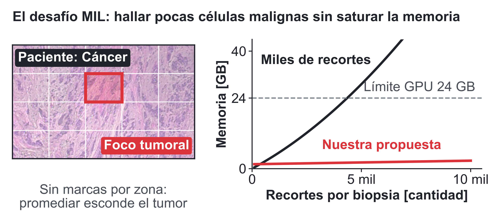
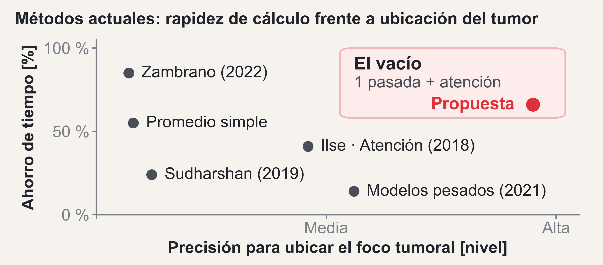
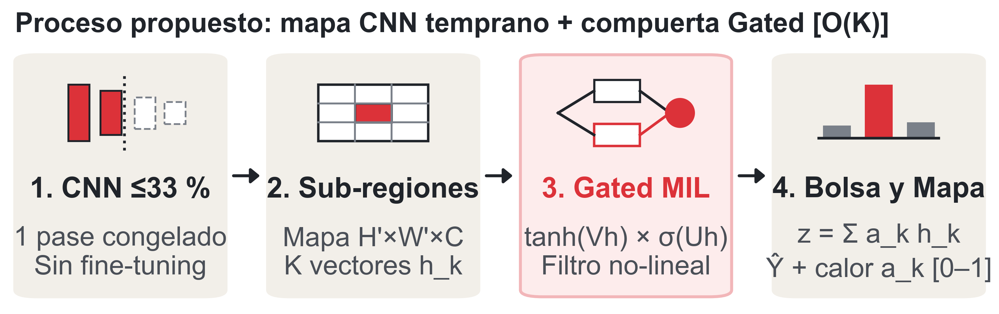
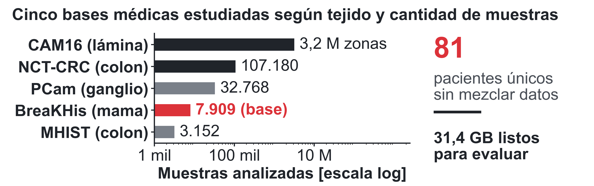
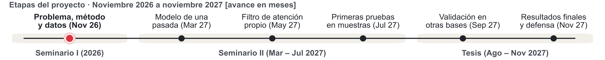
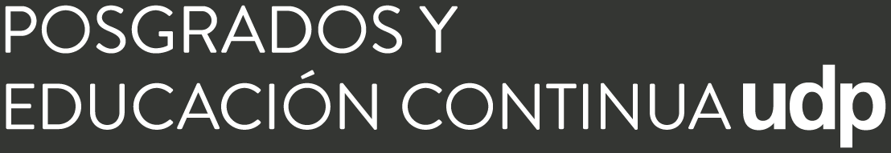

MCI
Magíster en Ciencias
de la Ingeniería

Aprendizaje multi-instancia en una pasada para detectar cáncer en biopsias
Seminario I · Informática y Telecomunicaciones
·
Lucas Vicuña Fuenzalida · Profesor guía: Dr. Jorge E. Zambrano Ibujés
Problema y estado del arte
Una biopsia tiene millones de píxeles, un solo diagnóstico y recortarla es muy costoso.
Introducción al problema

En clínica solo se anota el diagnóstico del paciente, no cada célula. El enfoque multi-instancia (MIL) aprende así, pero miles de recortes saturan la memoria.
Estado del arte

La atención automática ubica zonas sospechosas e ignora tejido sano. Aparte, usar solo las primeras capas ahorra 60 % de cálculo.
Vacío y novedad
Los modelos precisos recortan miles de parches; proponemos analizar la biopsia en una pasada enfocando el tumor con atención.
Objetivos
General: clasificar biopsias de cáncer uniendo extracción rápida en una pasada con atención automática.
Específicos: 1) extraer texturas iniciales sin recortar la imagen; 2) filtrar zonas clave con atención; 3) comparar precisión, memoria y tiempo.
Diseño metodológico propuesto
Reemplazamos miles de recortes por una sola pasada guiada por atención.

Comparamos nuestra propuesta liviana frente al método por recortes, separando a cada paciente.
Avance a la fecha
Definimos el modelo propuesto y preparamos cinco bases médicas reales.

Revisamos 31,4 GB de biopsias sin mezclar muestras de un mismo paciente.
Plan
Al terminar Seminario II tendremos nuestro modelo entrenado y comparado en muestras reales.

Busco retroalimentación sobre
1. ¿Conviene estandarizar el color de las biopsias antes de analizarlas con la red?
2. ¿Qué equilibrio entre precisión médica y ahorro de memoria resulta más valioso demostrar?
Referencias
y artículos
consultados

Jornadas de Investigación del Magíster en Ciencias de la Ingeniería · diciembre de 2026
Programa Magíster en Ciencias de la Ingeniería · Facultad de Ingeniería y Ciencias UDP